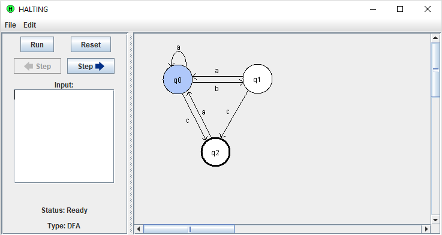

In my final semester as an undergraduate student, in fulfillment of a programming-intensive computer science honors thesis, I designed and implemented from scratch a GUI application for simulating finite automata. The application is written in Java; to see its code, read the user's manual, or download the application to run it, see its Github.
HALTING (or: Honors Automata Language Theory Including Navigable Graphics) allows the user to quickly build, edit, and run deterministic finite automata. Finite automata (or finite-state machines) are an abstract concept used in computational theory.
An automaton is graphically represented per classroom standard: each state is a circle, and transitions are depicted as arrows. After entering an input string, users can simply view the end result (accept or reject) or can step through the input one character at a time, watching the machine transition through its states. Automata can also be saved and loaded, which can greatly improve the efficiency of classtime.
Check out the user's manual for directions on using HALTING.
In the summer of 2016, I was hired by the Hamilton College Computer Science department to work on developing a programming language. Along with another student, that summer I developed a compiler for a statically typed dialect of Python called CSPy, which is intended for classroom use.
CSPy aims to retain the user-friendliness of Python for introductory students while encouraging conscientious coding through features such as explicitly declared variables. We expanded an existing grammar and developed comprehensive semantic type-checking and a system for translating CSPy source code to native Python.